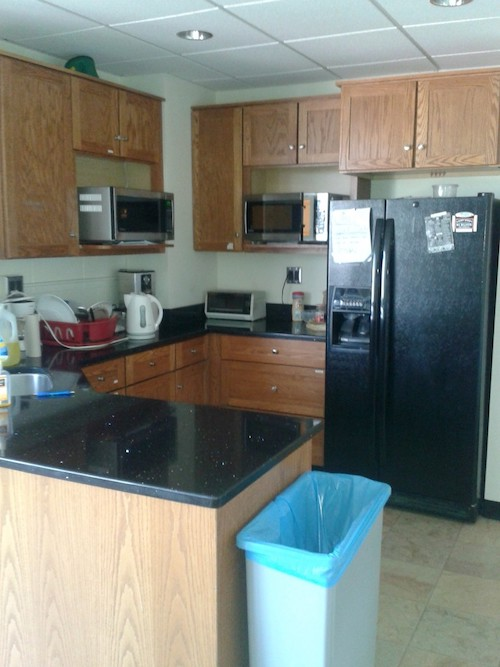
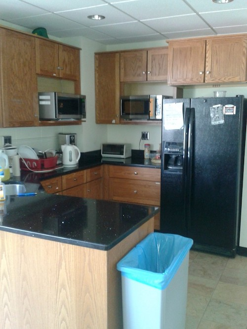

Our Mission
Our mission is to foster communication among graduate students from different concentrations, staff and faculty, and to provide a forum for the free exchange of ideas.
According to our constitution, every graduate student in CEE is automatically a member of CEE GSA but we are open to all graduate students (especially those that are in different fields but work within CEE labs). Each spring, we elect four Executive
Board members (President, Vice President, Treasurer and Secretary). In the fall, the Executive Board reviews applications for the remaining board positions including Social Chairs, Symposium Chairs, Seminar Chair, GPSA Field Representative,
MEng Liaison, Member at Large, and Photographers. For more information, see our constitution, which was most recently amended in October 2016.
CEE GSA Constitution Oct 2016
Our Space
Thanks to generous donations from Craig J. Miller, 1961, MS 1996, PhD 1972, we are able to maintain our CEE Class of 1961 Graduate Lounge in 351 Hollister Hall. At our disposal we have a kitchen, a conference area, an extensive entertainment system, and a spacious lounge area. Here we hold our many socials and other graduate events.
 
